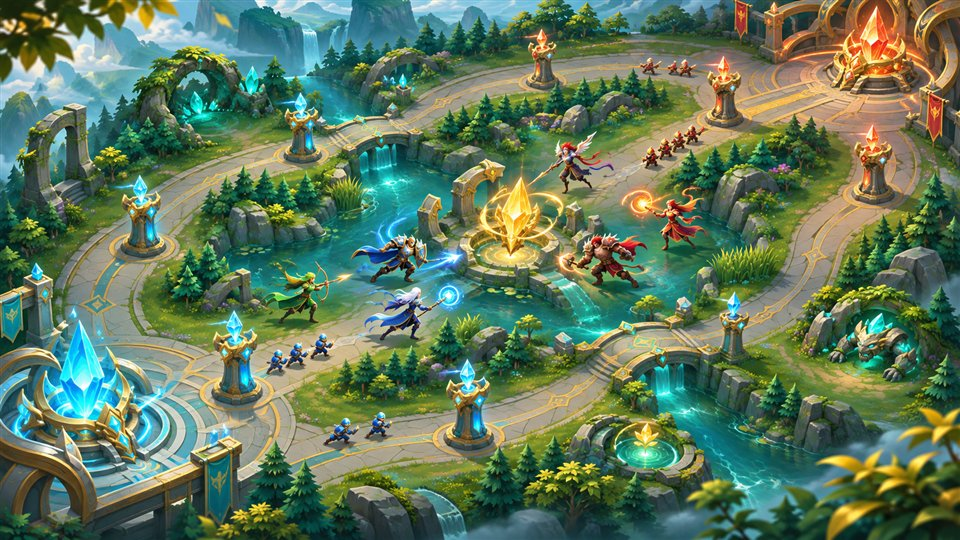

KVAHOOT
Uji daftar pelajar, paparan soalan dan penghantaran jawapan. Mulakan sesi ujian di panel cikgu dahulu.
Pilih mana-mana mod untuk uji pada telefon atau komputer. Tester ini tidak guna rekod kuiz sebenar kecuali KVAHOOT yang memerlukan sesi ujian khas yang cikgu mulakan.
Uji daftar pelajar, paparan soalan dan penghantaran jawapan. Mulakan sesi ujian di panel cikgu dahulu.
Tester khusus boleh pilih set soalan, susunan tetap/rawak dan mod pratonton atau sesi ujian.

Sandbox tempatan dengan lima pasukan, menara dan askar pengawal. Tiada rekod kelas atau sambungan sesi.
Demo dapur tempatan untuk cuba gerak chef, sentuh empat stesen dan lihat markah restoran berubah.
Halaman ini memudahkan penguji luar membuka setiap mod secara berasingan. Ujian beban 28 peranti masih perlu dibuat dengan beberapa peranti/browser serentak.